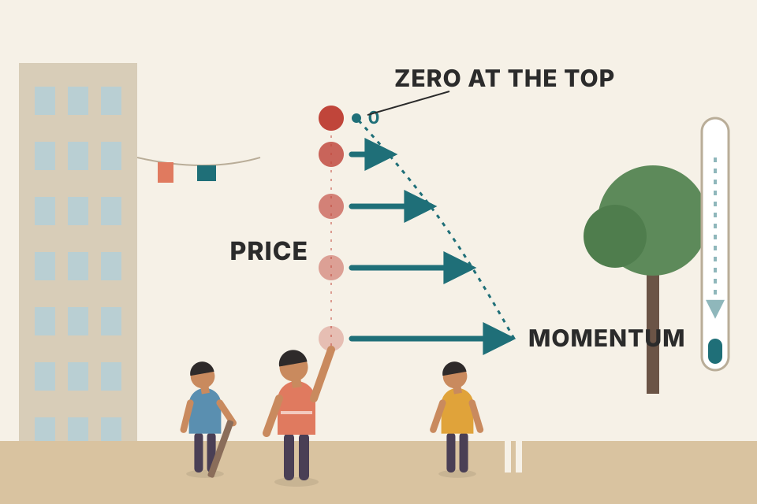
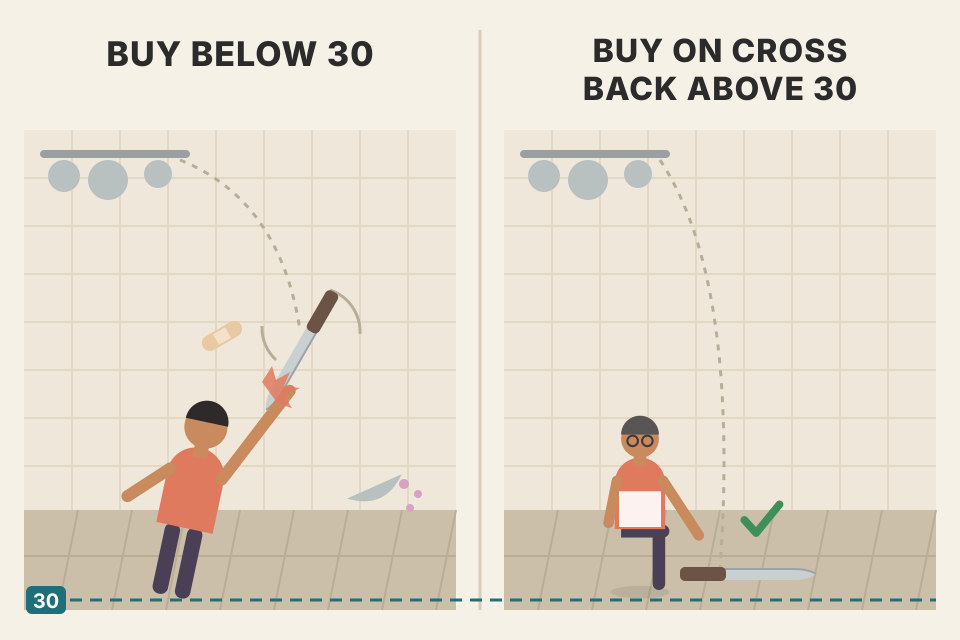
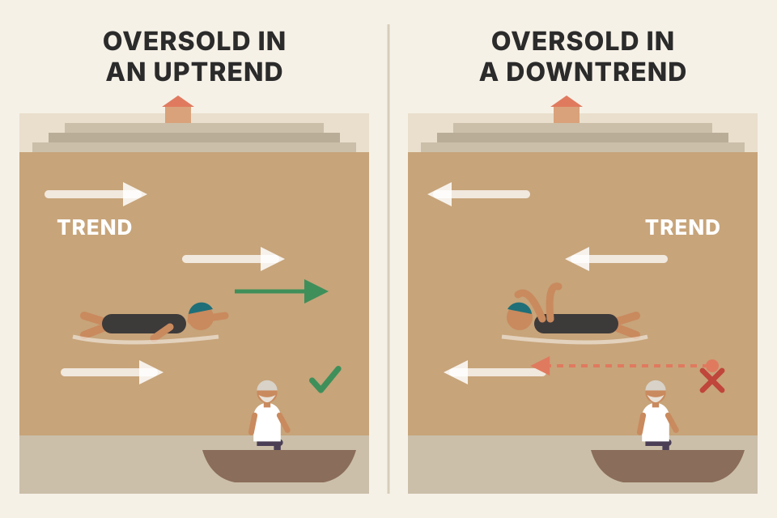
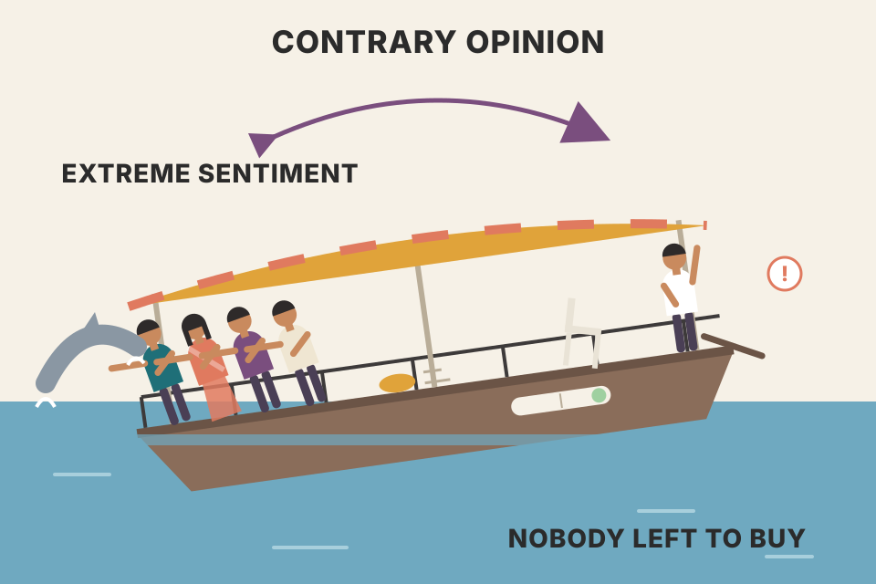

Moving averages follow trends. Oscillators ask a different question: has this move gone too far, too fast? This page walks through the whole chapter in the book's order: momentum, rate of change, two-average oscillators, CCI, RSI, stochastics, %R, MACD and its histogram, and finally crowd sentiment. Every oscillator is built live from a simulated market, so you can move the sliders and see exactly what each formula does. All prices and readouts are simulated, not real market data.
Every oscillator in this chapter is a different answer to one question: how stretched is price right now, compared with its own recent past? Murphy starts with the simplest answer (a price difference) and adds fixes one at a time. Then he turns from price to people: contrary opinion measures how stretched the crowd is.
The oscillator is Murphy's alternative to trend-following tools. It is most useful in non-trending markets, where prices move sideways inside a horizontal band (a trading range). That is exactly where most trend-following systems, like the moving averages of Chapter 9, stop working well.
It still helps when the market is trending. Used together with the price chart, it warns of short-term extremes, called overbought (risen too far, too fast) and oversold (fallen too far, too fast). It can also show that a trend is losing momentum before price makes that obvious, mainly through divergences.
Murphy's plan for the chapter: what an oscillator is and how it's built and read; what momentum means; the common oscillators from simple to complicated; divergence; matching oscillators to market cycles; and how oscillators fit into a full analysis.
A moving average is a compass: it tells you which way you're heading. An oscillator is a speedometer with a red zone: it doesn't care where you're going, only whether you're going unusually fast. In a car park (a sideways market) the compass spins uselessly, but the speedometer still tells you when you've hit the end of the lot.
In the shaded sideways stretches, price usually crosses the 20-day average far more often than in the trends, and each crossing is a trend signal that goes nowhere. The oscillator below swings from its low zone to its high zone and back, and those swings line up with the bottoms and tops of the range. In the trending stretches the opposite happens: the average is useful, and the oscillator sits in its high (or low) zone for weeks.
Beyond the book: the readout's 100-market average is the fair test: in 94 of those 100 simulated markets the sideways stretches had more crossings per 100 days than the trends. The page opens on market #52, chosen as a typical case; some rolls (market #7, for one) show the reverse, which is why the pooled average is printed next to it.
Murphy calls the oscillator a secondary indicator: it must be subordinated to basic trend analysis. Throughout the chapter he keeps repeating one point: trade in the direction of the overriding trend.
Oscillators are not equally useful at every stage. Near the beginning of important moves they don't help much and can even mislead. Toward the end of moves they become extremely valuable. And because oscillators study market extremes, the chapter finishes with Contrary Opinion, the study of extremes in crowd psychology.
A runner who has just started a race always looks "out of breath" on a heart-rate monitor; that tells you nothing about how far they'll run. Near the end of a long race, a falling heart rate while the legs still move tells you a lot.
There are many formulas, but the interpretation hardly changes from one to the next. Most oscillators look alike: a flat horizontal band plotted under the price chart. The band stays flat whether price is rising, falling or moving sideways, but its peaks and troughs line up with the peaks and troughs of price. Some have a midpoint line that splits the band into an upper and lower half, usually a zero line. Some also have fixed boundaries from 0 to 100.
General rules. An extreme reading at the top or bottom of the band suggests the move has gone too far too fast and is due for a correction or consolidation. Buy when the line is in the lower end of the band, sell when it's in the upper end. A crossing of the midpoint line is often used for buy and sell signals.
The three situations where an oscillator is most useful (common to most oscillators):
An oscillator measures price against its own recent past, not against zero or against history. That's why its band stays flat while price drifts: a stock at ₹100 and the same stock at ₹500 can both read "overbought" if each just rose unusually fast. The peaks line up because the fastest part of a rise usually ends near the top of a swing.
Momentum is the most basic oscillator. It measures the velocity of price changes, not the price level. To build a 10-day momentum line, subtract the close of 10 days ago from today's close, and plot the result around a zero line:
If today's close is higher than 10 days ago, the value is positive and sits above zero; if lower, it is negative and sits below. Ten days is common (for reasons explained in section 18), but any period works. A shorter period (5 days) gives a more sensitive line with more pronounced oscillations; a longer one (40 days) gives a much smoother line whose swings are less volatile. In Fig 10.1a, readings far above zero are labelled overbought and far below oversold; Fig 10.1b shows the 40-day version catching the major turns better than the 10-day. Both figures are daily Treasury Bond charts, and the caption of Fig 10.1a repeats the chapter's theme: use momentum together with the trend.
Made-up closes (not from the book): today ₹112, ten trading days ago ₹105. M = 112 − 105 = +7, plotted 7 points above zero. If tomorrow closes at ₹112 again but the close ten days before tomorrow was ₹110, M falls to +2 even though price didn't move: the line reacts to the old price leaving as much as to the new one arriving (Wilder's complaint in section 11).
Price is a car's position on a road; momentum is how far the car travelled in the last 10 days. A car can be far down the road (high price) while barely moving now (momentum near zero).
With x = 2 the line copies daily noise. As x grows, each value spans more days, so random ups and downs cancel more and the line becomes smoother and less jumpy. Don't confuse that with smaller: in points its swings usually get bigger, because more of the trend fits inside a longer window. Turn on the 40-day overlay and compare.
price_physics_basics.md uses the same idea: velocity ≈ (Pₜ − Pₜ₋ₙ) ÷ (n · Pₜ₋ₙ), measured by ROC or 12-month momentum. Murphy's momentum is the un-divided version.Plotting price differences means you are studying rates of ascent or descent:
For the line to rise, the latest 10-day gain must be bigger than the one before. Equal gains give a flat line; smaller gains make it fall even while prices rise. Because of this construction, the momentum line is always a step ahead of price: it leads the advance or decline, levels off while the price trend is still going, and turns the other way as prices begin to level off.
Made-up 10-day momentum readings on five days in a row, late in an uptrend: +8, +8, +6, +3, −1.
Momentum stopped rising on day 2 and fell from day 3, while price was still above its level of 10 days before; only on day 5 does the close drop below it. That is momentum leading price. The last line is the identity from "behind it" below.

Throw a ball straight up. Its speed starts dropping the moment it leaves your hand, long before it reaches the top. The ball is price; its speed is momentum. Speed hits zero exactly at the top, and the speed graph turned down much earlier.
Each day, an N-day simple moving average changes by (today's close − the close N days ago) ÷ N, which is N-day momentum ÷ N. So "momentum below zero" and "the N-day MA is falling" are the same event; the readout checks it. This identity isn't printed in the book, but it is exactly why Murphy can say the 10-day average has begun to decline.
Beyond the book: on this smooth simulated swing (one full wave of 160 days), an N-day momentum peaks about 40 − N ÷ 2 days before price. Short momentum leads most; a long one leads less.
price_physics_basics.md: velocity = momentum, acceleration = the change in momentum (MACD histogram, section 22).Many technicians buy when momentum crosses above zero and sell when it crosses below. Murphy stresses again that basic trend analysis overrides the oscillator: don't use it as an excuse to trade against the trend. Take buys on crossings above zero only if the trend is up; take shorts on crossings below zero only if the trend is down.
Two more ideas from the figures: trendlines drawn on the momentum line are broken sooner than the matching trendlines on price, so momentum works as a leading indicator (Fig 10.2a, 40-day momentum). And a moving average helps confirm trend changes; Fig 10.2b uses an 80-day average with 40-day momentum, where momentum also peaked before price.
Made-up: 40-day momentum goes from −0.8 yesterday to +1.2 today, a cross above zero, a buy candidate. Close ₹103, 80-day MA ₹101: price is above its average, the trend is up, so the buy is taken. Same crossing with the close at ₹98 under an MA of ₹101: the trend is down, so the buy is refused; you would only use it to cover a short.
A bus stop where buses go both ways. The zero cross tells you a bus has arrived; the trend tells you which side of the road you want. Getting on every bus that stops is how you end up on the wrong side of town.
Solid triangles are signals taken; hollow ones are signals the trend filter refused (a refused buy still covers a short, a refused sell still closes a long). The filter stops you from shorting an uptrend's dips and buying a downtrend's bounces, but it has a price. Look at the readout's 100-market average: in this simulation the filter usually earns less than taking every crossing. The 80-day average turns late, so right after a top it still says "uptrend" and refuses the first short signals of the new decline. A trend filter trades late entries at turning points for fewer trades against the trend; it is not free.
Beyond the book: the trend test here is "close above or below the 80-day simple MA", my coding of Fig 10.2b. Results include a 0.1% cost per trade and are simulated.
Plain momentum has no fixed upper or lower limit. Yet the main value of an oscillator is spotting extremes. Murphy's simplest fix, and probably the most effective one: look back over the momentum line's history and draw horizontal lines along its upper and lower boundaries. Adjust the lines from time to time, especially after important trend changes. Fig 10.3 shows such lines on 10-day momentum; Fig 10.4 does the same with 13-week momentum on a weekly chart, where the line changed direction before price at each major turn.
A high-water mark painted on a river wall. You only know what "a flood" means for this river by looking at its past levels, and after the river changes course, you repaint the marks.
The "enclose" slider puts the upper line at that percentile of the line's past values and the lower line at the mirror percentile. That is a mechanical version of drawing lines by eye. With fixed lines, a strong trend can push momentum outside for weeks; re-drawn lines move with the market, which is Murphy's advice to adjust the lines from time to time.
Beyond the book: percentiles and the 60/120-day schedule are my stand-in for drawing the lines by eye.
Rate of change divides instead of subtracting: today's close divided by the close x days ago.
Above 100 means prices are higher than 10 days ago; below 100 means lower. Murphy notes that charting software sometimes uses variations of the momentum and ROC formulas, but while the construction varies, the interpretation stays the same.
Same made-up closes as section 04: ROC = 100 × 112 ÷ 105 = 106.7, i.e. 6.7% above the 100 midline. A ₹1,120 stock that rose from ₹1,050 has the same ROC (106.7) but a momentum of +70 instead of +7. ROC puts both on one scale; momentum doesn't.
Beyond the book: the simulated price climbs a long way (the readout shows how far) while its daily percentage moves stay the same size. A 2% move is ₹1 at ₹50 and ₹4 at ₹200, so momentum's swings grow with the price and old "boundary lines" stop fitting. ROC measures in percent, so its swings stay roughly the same size from start to end. That is one practical reason to prefer ratios when a market moves a long way.
price_physics_basics.md lists ROC as the velocity indicator.Chapter 9 used two moving averages for signals: the shorter crossing above or below the longer. The same pair can build an oscillator: plot the difference between the two averages as a histogram, bars above or below a centred zero line. It has three uses:
Murphy also mentions dividing the shorter average by the longer. Either way, the shorter average oscillates around the longer one, which acts as the zero line: positive when the short is above, negative when below.
When the two lines get too far apart, a market extreme calls for a pause; often the trend stalls until the short line comes back to the long one. That return is a critical point. In an uptrend, a dip of the short line back to the long one that bounces off it is usually an ideal buying area, much like a test of an up trendline. If the short line crosses below, a reversal is signalled. In a downtrend, a rise of the short line up to the long one is usually an ideal selling area, unless it crosses. So the pair is both a trend-following system and a short-term overbought/oversold gauge. Figures: 9 and 18 days (Fig 10.5), 10 and 50 days, where the histogram finds support at zero in an uptrend (Fig 10.6), and 10 and 40 weeks on a weekly chart, where overbought and oversold levels are easy to see (Fig 10.7). In every figure the histogram turns well before the actual crossover.
Made-up: 9-day SMA ₹104.0, 18-day SMA ₹100.0. Difference = 104 − 100 = +4.0 (a bar 4 points above zero); ratio = 104 ÷ 100 = 1.04 (4% above the 1.0 midline). Over the next days the bars read +4.6, +5.1, +4.8, +3.9: the 5.1 is the turn, the gap has stopped widening. Bounce scenario: the bars shrink to +0.3 and grow again without going under zero, the short average tested the long one and held, Murphy's ideal buying area. Reversal scenario: they shrink through zero to −0.4, the crossover.
A dog on a stretchy lead (short MA) and its owner (long MA). The histogram is the length of the stretched lead. The lead is longest in the middle of a run and is already getting shorter well before the dog actually falls behind the owner. That shortening is your early warning.
Purple dots mark the biggest bar between two crossovers: the point where the gap stopped widening. After that the gap shrinks bar by bar until it hits zero, the crossover. The readout measures how many days earlier the turn came than the signal.
Beyond the book: the ratio has no midpoint value in the text; its natural midpoint is 1.0 (the two averages equal), drawn dashed.
One way to give an oscillator fixed boundaries is to divide it by a constant. Donald R. Lambert's Commodity Channel Index (CCI) compares the current price with a moving average over a chosen span, usually 20 days, then normalises the result with a divisor based on the mean deviation. Murphy describes the CCI as moving in a constant range from +100 to −100.
Made-up 20 days (beyond the book, using Lambert's formula above): the 20-day average of the typical price is 200.0 and its mean deviation is 4.0. Today high 209, low 205, close 207.
Lambert: a long candidate. Most chartists: overbought. Same reading, two opposite uses; the trend decides which one applies (section 19).
The mean deviation is the "normal distance" price strays from its average. Dividing by it makes the reading comparable across markets and price levels. Because 1 ÷ 0.015 ≈ 66.7, a reading of ±100 means the typical price is 1.5 mean deviations away from its average; the constant sets how often the line gets there.
Beyond the book: CCI has no hard ceiling or floor. Lambert picked 0.015 so that most readings (the figure usually quoted is 70–80%) fall inside ±100; Murphy's own Figs 10.8–10.9 run past ±100 (to about ±150–200), and Lambert's rule of buying above +100 only works because the line can leave that band. So read Murphy's ±100 range as the usual range, not a wall. The readout counts how often the simulated CCI is inside ±100: only about half the time here at 20 days (51% averaged over the 100 pooled markets), because this simulated market spends most of its days in long trends.
A dog's distance from its owner, measured in "usual lead lengths". At one and a half lead lengths (CCI +100) the dog is pulling unusually hard ahead; Lambert's idea was to follow that pull, while most chartists bet the dog gets yanked back.
The RSI was developed by J. Welles Wilder, Jr. and presented in his 1978 book New Concepts in Technical Trading Systems. Murphy covers the main points and recommends Wilder's original for depth. Because it is so popular, he uses it to demonstrate most of the principles of oscillator analysis.
Wilder pointed out two problems with momentum. First, it moves erratically because of sharp changes in the values being dropped off: a big move 10 days ago can jolt a 10-day momentum line even when today's prices barely change, so some smoothing is needed. Second, it needs a constant range for comparison. RSI solves both, with smoothing and a fixed vertical range of 0 to 100.
The name is a misnomer. In stock analysis, "relative strength" usually means a ratio line comparing two things, such as a stock or industry group against the S&P 500 (covered later in the book; see Ch.17). Wilder's index doesn't compare two entities.
Wilder used 14 days (14 weeks on weekly charts); change x to change the period. The shorter the period, the more sensitive the oscillator and the wider its swings. RSI works best when it reaches its upper and lower extremes, so a very short-term trader can shorten it; lengthening it makes it smoother and narrower. The 9-day swings more than the 14-day. Nine and 14 are the most common; some use 5 or 7 for more volatility, others 21 or 28 to smooth the signals. Fig 10.10: a 14-day RSI is overbought above 70 and oversold below 30; on the S&P 100 it was oversold in October and overbought in February. Fig 10.11: a 7-day RSI reaches the extremes more often than a 14-day, which suits short-term traders.
Made-up 14 days (not from the book): 9 up days gaining 21 points in total, 5 down days losing 7 points in total.
Note that both totals are divided by 14, not by the number of up or down days. If every day were up, the down average would be 0, RS infinite, and RSI exactly 100; if every day were down, RSI would be 0. That is how the formula pins the line inside 0–100.
A tug of war between buyers and sellers over the last 14 days. RS is the buyers' total pull divided by the sellers'. RSI turns that into a score: 50 means an even match, 100 means only buyers pulled, 0 means only sellers.
Price jumps once on day 40 and then goes sideways. Ten days later, with no change in price, momentum collapses back to zero, because the big day has dropped out of its window. The RSI built from plain 14-day averages (the book's description) has the same jolt on day 54. Wilder's own method updates the averages with smoothing, so the jump fades away instead of falling off a cliff.
Beyond the book: Wilder's smoothing, used by almost all charting software: first value = plain 14-day average, then each day average = (previous × 13 + today's gain or loss) ÷ 14. It's the same trick as the exponential average in Ch.9 §05, with α = 1/14. Every other RSI on this page (section 01, sections 12–14, 16, 19 and 20, and the hidden RSI that section 26's simulated sentiment is built from) uses Wilder's smoothing, as charting software does.
intraday_swing_playbook.md (S-2) notes that standard RSI(14) rules failed on the Sensex in Indian research, and a 2-period RSI is the popular pullback trigger. Try RSI days = 2 above and watch it live at the extremes.RSI is plotted from 0 to 100. Above 70 is overbought; below 30 is oversold. Because the line shifts in bull and bear markets, 80 usually becomes the overbought level in bull markets and 20 the oversold level in bear markets.
Wilder's failure swings happen when RSI is above 70 or below 30:
Made-up 9-day RSI readings for a top failure swing: peak 1 = 78, trough = 64, peak 2 = 73 (still above 70 but lower than 78), while price makes a higher high. RSI then falls to 63, under the 64 trough: point 3, the sell signal. For a bottom failure swing flip it: trough 1 = 22, peak = 36, trough 2 = 27 (still under 30, higher than 22), then RSI rises above 36: buy.
A high jumper who clears 2.10 m, then only manages 2.05 m on the next attempt, and then can't even clear the warm-up bar they cleared in between. Price may still be inching up, but the athlete is tiring.
The failure swing is a pattern on the RSI line alone. Point 2 shows the push has less force than point 1; point 3 confirms it, because the oscillator has now broken its own support. The signal is entirely inside the oscillator, which is why it can come before any break on the price chart.
Beyond the book: my coding: peaks 1 and 2 both above 70 (troughs 1 and 2 both below 30, as in the figures), peak 2 lower than peak 1 (trough 2 higher than trough 1), then RSI crosses the middle point within 30 days. A peak counts only after two lower days follow it. Wilder's 9-day RSI (the figures' setting) is the default here.
A divergence between RSI and price while RSI is above 70 or below 30 is a serious warning. Wilder himself called divergence
"the single most indicative characteristic of the Relative Strength Index" (Wilder, p. 70, quoted by Murphy)
Trendlines on the RSI line can detect changes in its trend, and so can moving averages of it; in Fig 10.13 (9-day RSI) breaks of two RSI trendlines gave timely buy and sell signals. Murphy's personal experience: RSI's greatest value lies in failure swings or divergences that occur above 70 or below 30.
Another important point: any strong trend usually produces an extreme reading long before it ends. Calling the market overbought or oversold then is usually premature and can push you out of a profitable trend early. In strong uptrends, overbought markets can stay overbought for a while. An upper reading alone is not a reason to sell a long position, much less to go short.
The first move into the overbought or oversold zone is usually just a warning. Pay close attention to the second move into the danger zone. If it fails to confirm a new price high or low (a double top or bottom on the oscillator), a possible divergence exists, and some defensive action can be taken to protect positions. If the oscillator then turns and breaks its previous high or low, the divergence or failure swing is confirmed.
The 50 level is RSI's midpoint. It often acts as support during pullbacks and resistance during bounces. Some traders buy when RSI crosses above 50 and sell when it crosses below.
A car climbing a hill. The car is still getting higher (price makes a higher high), but the engine revs are lower than on the last climb (RSI makes a lower high). Not a crash yet, but the engine is running out of power.
RSI measures the balance of recent up-moves against down-moves. A new price high reached by a slow grind contains small gains mixed with losses, so RSI peaks lower than it did during the fast first leg. The divergence lines connect two RSI peaks (or troughs) where the first sat in the 70+ (or 30−) zone and price disagreed.
Beyond the book: detection rule = two neighbouring RSI swing points 5–40 days apart, first one beyond 70/30, RSI lower (higher) while price is higher (lower). Swing points are confirmed three days after the fact.
Beyond the book, the failure mode in numbers: the second line of the readout asks the question a trader actually cares about: after a divergence is visible (dated 3 days after the second swing point, so there's no peeking at the future), did price then go the way it warned? In this simulation, mostly not: at every RSI length on the slider, bearish divergences are followed by higher prices more often than lower, while bullish ones are followed by higher prices only about half the time or less (below the 54% of an ordinary day). The reason is the simulator, and it teaches something real. Its trend stretches change on a fixed schedule, not because momentum ran out, so most divergences fire in the middle of a trend that simply carries on. A divergence describes slowing momentum; it does not by itself say the trend is over. That is why Murphy wants the second move into the danger zone, the oscillator's break of its own previous high or low as confirmation, and (section 19) never a divergence used as an excuse to trade against the trend. Real markets may behave differently; this shows what the signal is worth when nothing else backs it up.
Made-up numbers: price makes a high of ₹150 while 14-day RSI peaks at 76 (above 70, the first move into the danger zone: a warning only). Price dips, RSI falls to 61. Price then climbs to a new high of ₹154, but RSI peaks at only 72: the second move into the zone fails to confirm the new price high. That's a possible bearish divergence, a reason to tighten stops or take part profits. If RSI then drops below 61, its previous low, the divergence is confirmed. Before that, nothing has actually turned.
Traders often turn the 70 and 30 lines into signals. Suppose you think a market is about to bottom. You watch RSI dip under 30. A divergence or a double bottom may form in that oversold zone. A crossing back above 30 is taken by many traders as confirmation that the oscillator's trend has turned up. In an overbought market, a crossing back under 70 can often be a sell signal.
RSI works on monthly charts too. In Fig 10.14 (9-month RSI, Dow Utilities, 1973–98) there were two major oversold buy signals, in 1974 and 1994, and the overbought peaks did a good job of pinpointing important tops.

Catching a falling knife versus picking it up off the floor. Buying the moment RSI drops below 30 is catching it in the air; waiting for the cross back above 30 is letting it land first.
The readout splits the system's profit by the kind of day it was earned on: shaded sideways days versus trend days. In the 100-market average, and in about three of every four single markets, the sideways days earn a little and the trend days lose a lot. In a strong trend, "sell when it falls back under 70" keeps putting you short an uptrend, which is section 13's warning in numbers.
Beyond the book: the system (buy signals go long, sell signals go short or flat, 0.1% cost per trade) is my simplified version for comparison; the RSI defaults to 9 days, the length of Fig 10.14's 9-month RSI, because in this simulation a 14-day line gives fewer crossings back out of the zones (about 1–2 completed trades per market instead of 3–4), leaving little to compare. Results are simulated.
Beyond the book: Murphy gives the entry (RSI crosses back above 30, or back under 70) but no stop or target. To judge a rule you need all three, so here is one honest, fully mechanical version. Entry: at the close of the day RSI crosses back out of the zone. Stop: the lowest low (for a short, the highest high) of the days RSI spent in the zone plus the signal day, i.e. the bottom of the dip the signal says is over, and at least 0.5% from the entry. That distance is 1R, the money at risk. Exit: the stop, or Murphy's opposite signal (RSI back under 70 for a long, back above 30 for a short), or a fixed target at 2R, or 40 days, whichever comes first. If the stop and the target are both touched on one day, the stop is assumed (the pessimistic choice). Results are in R after a 0.1% cost.
Made-up numbers: RSI dips under 30 for four days; the lowest low in those days is ₹96.0. On the day RSI climbs back above 30 the close is ₹99.0, so you buy at 99.0 with a stop at 96.0. Risk 1R = 3.0 points (3.0% of price). A 2R target sits at 99 + 2 × 3 = ₹105.0.
Measuring in R puts a ₹100 stock and a ₹3,000 stock on one scale, and makes the edge a single number: average R per trade (expectancy). With a 2R target you need to win more than one trade in three to break even: 1/3 × 2R − 2/3 × 1R = 0, before costs.
Step through the trades. The shaded strip is the oversold (or overbought) stretch plus the signal day; its extreme sets the stop, so the stop sits exactly where the "dip is over" idea is proven wrong. Three things show up in the pooled line:
Read the pooled line, not one market: a single market gives a handful of trades, far too few to tell skill from luck.
Beyond the book: the stop, target, 40-day limit and the trend test (50-day MA higher or lower than 10 days earlier) are mine. Close-above-the-MA, the test used in section 19, almost never says "uptrend" on the day RSI climbs back above 30, because the dip itself pulled price under the average; the MA's direction avoids that. The trades are on simulated markets whose only edge is the drift built into their trend stretches, so the numbers show how the mechanics behave, not whether RSI works on real prices. Your own data has the last word: see section 31.
The stochastic oscillator was popularised by George Lane, president of Investment Educators, Inc., in Watseka, Illinois. It rests on one observation: as prices rise, closes tend to sit near the top of the price range; in downtrends, closes tend to sit near the bottom. It uses two lines, %K and %D; %D is the more important one and gives the major signals.
The aim is to show where the latest close sits within the price range of a chosen period. Fourteen is the most common period. The faster line, %K:
The result is a percentage from 0 to 100. Above 80 puts the close near the top of the range; below 20, near the bottom. %D is a 3-period moving average of %K; that version is called fast stochastics. Averaging %D over another 3 periods gives a smoother version, slow stochastics, which most traders use because its signals are more reliable. (Murphy's footnote: the second smoothing produces three lines; fast stochastics uses the first two, slow uses the last two.)
Made-up numbers (not from the book): over the last 14 days the highest high is ₹120 and the lowest low ₹100; today closes at ₹117.
Fast stochastics plots the 85 (%K) against the 80 (%D). Slow stochastics drops the raw %K and plots fast %D (80) as its K line against the slow %D (76) as its D line: line one, line two, line three, and slow uses the last two.
A lift in a 14-floor building whose floors keep changing. The ground floor is the lowest low of the last 14 days and the top floor is the highest high. %K tells you which floor the lift stopped at today: 90 means near the roof.
Step through the days. In an uptrend the range keeps stretching upward and closes keep landing near its top, so %K lives above 80. In a range, closes wander between the floor and the roof, so %K swings fully from 0 to 100. Fast %K is jumpy because one day's close can move it from top to bottom; each 3-day average makes it calmer, which is why slow stochastics gives fewer, cleaner signals.
Both lines move on a 0–100 scale: K is the faster line, D the slower. The major signal is a divergence between the D line and price while D is in an overbought or oversold zone (above 80 or below 20).
Made-up slow stochastics: %D peaks at 86 while price makes a high of ₹210, then peaks again at 82 (still above 80) as price makes a new high at ₹214. Lower %D peak, higher price: bearish divergence, the alert. Some days later %K drops from 84 to 79 while %D is at 81: K crosses below D, the sell signal. If RSI is also above 70 at that moment, Murphy's best case: both oscillators overbought.
Triangles mark K crossing D after D was above 80 (sell) or below 20 (buy). Turn on the RSI overlay: on the same market the stochastic sits in its extreme zones far more often than RSI does in its own. That's why one extreme reading alone means little, and two oscillators agreeing means more.
Beyond the book: divergence detection uses the same swing-point rule as section 13, applied to %D with 80/20.
stoch_rsi_macd_strategy.md uses the Stochastic RSI (settings 14, 14, 3, 3). That is a stochastic of the RSI line ("where is RSI inside its own 14-bar range?"), not Lane's stochastic of price. It's faster again, and your note says it crosses many times a day on intraday charts.intraday_swing_playbook.md S-4 (daily, Reliance) already pairs MACD with RSI > 50 and Stochastic %K < 80; profit factor ~1.5–1.7 after costs, still needs a multi-stock test.Larry Williams' %R uses the same idea: where the latest close sits within its range over a number of days. Today's close is subtracted from the high of the range, and the difference is divided by the total range. All the usual oscillator rules apply, mainly divergences in overbought or oversold areas. Because %R is measured from the high, it looks like an upside-down stochastic, so charting packages plot an inverted version. In Fig 10.18 (20-day %R, S&P 500) readings over 80 or under 20 mark market extremes.
Same made-up range as section 15 (high ₹120, low ₹100, close ₹117): %R = (120 − 117) ÷ (120 − 100) = 3 ÷ 20 = 15%. Close near the top gives a small %R, which is why it looks upside down. Inverted, 100 − 15 = 85, exactly the %K of section 15.
Not spelled out in the book: (H − C) + (C − L) = (H − L). So %R and the raw %K of the same length always add up to 100%: inverted %R is the raw (fast, unsmoothed) %K. The dashed %K sits exactly under the inverted line; the readout measures the biggest gap between them.
Beyond the book: I multiply by 100 to put %R on the 0–100 scale of Fig 10.18. Many packages show it from 0 to −100 instead; the shape is the same.
Oscillator lengths can be tied to underlying market cycles, using half the cycle length. The popular inputs of 5, 10 and 20 days are based on calendar periods of 14, 28 and 56 days. Wilder's RSI uses 14 days, half of 28. 28 calendar days (20 trading days) is an important dominant monthly trading cycle, and the other numbers are harmonically related to it. The popularity of the 10-day momentum and 14-day RSI comes largely from that 28-day cycle: they measure half of it. Chapter 9 explained why 5, 10 and 20 keep appearing; Chapter 14 covers cycles.
Beyond the book: the arithmetic mixes two calendars. 5, 10 and 20 are trading days (half of 14, 28 and 56 calendar days is 7, 14 and 28 calendar days, which is about 5, 10 and 20 trading days). The 10-day momentum is the clean case: 10 trading days is half of the 20-trading-day cycle. On a daily chart, software counts RSI's 14 as 14 trading bars (nearly 3 calendar weeks), so it is "half of 28" only if you read both numbers as calendar days. Take the half-cycle idea as the lesson rather than the exact 14.
A swing in a park. To feel the biggest difference in height, compare where the swing is now with where it was half a swing ago: top versus bottom. Compare with one full swing ago and you see no difference at all.
Beyond the book: for a pure cycle of length P, x-day momentum compares today with x days ago. At x = P/2 it compares a top with a bottom, so its swings are as large as they can be (the readout shows % of that maximum). At x = P they vanish. Set the cycle to 20 trading days (Murphy's monthly cycle) and slide momentum days: 10 gives the full swing. The cost: at x = P/2 momentum no longer leads price; it peaks with it. Shorter momentum leads more but swings less.
Beyond the book: for a price cycle of ±10 around 100 with length P = 20 days, x-day momentum swings ±20 × sin(π × x ÷ P) and peaks P ÷ 4 − x ÷ 2 days before price.
Set the sliders to these values and the readout reproduces them, give or take the noise and rounding to whole days (it shows a 2-day lead for x = 5; at x = 20 its lead figure is just noise around a flat line). The same formula with P = 160 gives section 05's "40 − N ÷ 2".
Murphy's recap: oscillators help find near-term overbought and oversold conditions and alert you to divergences. The chapter went from momentum, to ROC (ratios instead of differences), to two moving averages, to RSI and stochastics, and how to sync oscillators with cycles.
Divergence analysis is the oscillator's greatest value, but don't lean on it so much that basic trend analysis gets ignored. Most oscillator buy signals work best in uptrends, and sell signals are most profitable in downtrends. Always start by finding the general trend. If it's up, a buying strategy is called for, and oscillators help time entry: buy when the market is oversold in an uptrend; sell short when it is overbought in a downtrend. Or buy when momentum crosses back above zero in a bull trend and sell a crossing below zero in a bear market.
The importance of trading with the major trend can't be overstated. The danger of relying on oscillators alone is the temptation to use divergence as an excuse to trade against the trend, which usually proves costly and painful. The oscillator is one tool among many: an aid, not a substitute, for trend analysis.

Swimming in a river. An "oversold" moment in a river flowing your way is a chance to kick off and ride the current. The same moment in a river flowing against you is just a short rest before you're pushed back.
Every RSI cross back above 30 (buy) and back below 70 (sell) is sorted into "with the trend" (solid) and "against the trend" (hollow), using price above or below the trend average. The readout shows what price did over the next few days for each group, first in this market (often too few signals to judge), then pooled over 100 simulated markets. In this simulation trends persist by construction (its trend stretches have a steady drift), so a with-trend signal collects that drift and an against-trend signal pays it. That is the mechanism behind Murphy's rule, not proof that real markets behave this way.
Beyond the book: the trend average, the short default RSI and the forward-move scoring are mine. A 14-day RSI almost never falls under 30 inside an uptrend (the reason Murphy shifts levels to 80/20 in trending markets), so a shorter RSI is used to get dips to trade. Results are simulated.
stoch_rsi_macd_strategy.md: the first version had this rule (price above the 200 EMA and 50 EMA above 200 EMA). In the re-test, dropping the EMA filter helped buys but hurt sells (the 15-min sell lead disappeared).During choppy periods, when prices move sideways for weeks or months, oscillators track price very closely: their peaks and troughs match almost exactly. Then a breakout starts a new trend. By its nature the oscillator is already at an extreme when the breakout happens: overbought on an upside breakout, oversold on a downside one. The dilemma: buy a bullish breakout into an overbought reading? Sell a breakdown into an oversold market?
Murphy's answer: ignore the oscillator for now and take the position. Early in a new trend, after an important breakout, oscillators often reach extremes quickly and stay there for a while. Trend analysis should lead then. Later, as the trend matures, give the oscillator more weight. (Chapter 13: the fifth and final Elliott wave is often confirmed by bearish oscillator divergences.) Many dynamic bull moves have been missed by traders who saw the major trend signal but waited for an oversold reading before buying. In short: less attention to the oscillator early in an important move, close attention as the move matures.
A plane on take-off is always at "maximum climb" on the instruments, and that's normal, not a warning. The same reading two hours into a flight, when the plane should be cruising, means something.
Shading: grey = sideways range, green = breakout leg, amber = mature, slowing trend, red = reversal. In the range, RSI's swings match the price swings. After the breakout RSI stays near or above 70 because nearly every day is an up day. In the mature leg price still makes new highs, but gains are smaller and mixed with losses, so RSI peaks lower: the divergence lines.
This is the two-exponential-average oscillator promised in Chapter 9. Gerald Appel developed MACD. Its strength is that it combines oscillator principles with a dual moving average crossover. You see only two lines, although three are used to compute them:
Appel originally recommended one set of numbers for buy signals and another for sells. Most traders use the defaults 12, 26 and 9 everywhere, daily and weekly.
One day of MACD by hand (made-up numbers, beyond the book: the standard EMA update, new = old + α × (input − old), with α = 2 ÷ (n + 1)). Yesterday: EMA12 = 104.00, EMA26 = 102.00, so MACD = 2.00; signal line = 1.80. Today's close: 107.
MACD is above its signal (bullish alignment) and the gap widened from 0.20 to 0.23. A sell crossover needs MACD to fall under the signal line, which takes several weaker closes because the signal line chases it.
Two runners (the EMAs) on a track. The MACD line is the distance between them. The signal line is a coach jogging along the middle, smoothing out that distance. When the gap starts closing faster than the coach expects, the line crosses the signal: the race is changing.
MACD crossing zero is the moment the 12-day EMA crosses the 26-day EMA on the price chart, exactly the double crossover of Ch.9 §07. MACD crossing its signal line is earlier: it fires when the gap between the EMAs stops widening fast enough. Solid triangles are Murphy's "best" kind (buys below zero, sells above); hollow ones are the rest.
Beyond the book: forward-move statistics in the readout are simulated; divergence lines use the swing-point rule of section 13 with zero as the dividing line. Single markets vary a lot, so read the 100-market line. With the default settings it runs against Murphy's "best" signals: buys below zero average worse than buys above zero, and sells above zero worse than sells below. The reason is the simulation, not MACD: its only built-in edge is the drift of its trend stretches, and about 4 in 10 below-zero buys fire inside the long simulated downtrend, where they are against-trend trades (section 19's point) and lose on average, while buys above zero mostly ride an uptrend. Murphy's rule assumes you have already checked the trend. None of this is evidence about real markets.
backtest_results_summary.md: MACD crossover (buy on cross up / confirmed above zero, sell on cross down, short below zero) was not worth trading anywhere, 1-minute to weekly. Weekly made 11–16%/yr but below just holding the stocks (14–19%), and random buy weeks with the same sell rule did as well; daily MACD was negative.Using the same technique as section 09, the two MACD lines become a MACD histogram: vertical bars showing the difference between the MACD line and its signal line, with its own zero line. When the lines are in positive alignment (faster above slower), the histogram is above zero. Its zero crossings coincide with the MACD crossover signals.
Its real value is showing whether the spread between the two lines is widening or narrowing. Above zero but falling toward zero: the uptrend is weakening. Below zero but rising toward zero: the downtrend is losing momentum. No actual signal comes until the histogram crosses zero, but its turns give earlier warnings; turns back toward zero always come before the actual crossovers.
Murphy's warning: histogram turns are best used to spot early exits from existing positions. It is much more dangerous to use them as an excuse to open new positions against the prevailing trend.
Made-up histogram bars over seven days: +0.6, +0.9, +1.1, +0.8, +0.5, +0.2, −0.1. Day 3 (+1.1) is the peak; on day 4 the bar shrinks, the turn, an early warning. Day 7 is the first bar under zero: the actual MACD sell crossover, three days later. Murphy's use: on day 4 a long position might tighten its stop or take part profit. Opening a short on day 4, against an uptrend, is the use he warns against.
Braking before a red light. The crossover is the car stopping; the histogram turn is your foot moving from the accelerator to the brake. It always comes first, but lifting your foot doesn't mean you're about to reverse.
MACD is a speed (the gap between a fast and a slow average). The histogram is MACD minus its own average, so it measures whether that speed is rising or falling: acceleration. A speed can only change direction after the acceleration has reversed, which is why the histogram's turn (purple dot) always comes before the crossing (triangle).
stoch_rsi_macd_strategy.md rule 3 ("MACD histogram higher than on the last candle") is an entry on a histogram turn. Murphy prefers turns for exits, and calls them dangerous for new trades against the trend. Your re-test went further and dropped the EMA filter, using the histogram as the trend check; on Nifty 50 every version lost except 2 of 168 (backtest_results_summary.md).price_physics_basics.md: the histogram is acceleration, "a difference of a difference", so it amplifies noise. That fits Murphy's caution.As with every technical indicator, weekly signals are more important than daily ones. The best combination: use weekly signals to set market direction and daily signals to fine-tune entries and exits. Follow a daily signal only when it agrees with the weekly signal. That turns the weekly signals into a trend filter and stops you trading daily signals against the prevailing trend. Murphy says this is especially true of two crossover systems: MACD and stochastics. In Fig 10.20b (weekly Nasdaq) the weekly histogram turned down 10 weeks before the sell signal at the middle peak, and turned up 2 and 4 weeks before the two buy signals.
The weekly chart is the tide; the daily chart is the waves. Surf the waves that move with the tide, and let the ones running against it pass.
The simulated daily series is grouped into weeks (5 days). Weekly MACD (12, 26, 9 on weekly closes) shades the chart green when its line is above its signal and red when below, using only finished weeks. Daily MACD crossovers are taken (solid) or skipped (hollow) depending on that shading. The filter usually cuts trade count sharply; whether it improves profit depends on the market you roll.
Beyond the book: the system details, the 0.1% cost and the results are mine and simulated.
backtest_results_summary.md: a daily-trend filter on 1-hour trades helped out-of-sample, the same idea one level down.stoch_rsi_macd_strategy.md lists "higher-timeframe trend" under didn't help for that strategy. A filter can't rescue an entry signal with no edge after costs.Oscillator analysis is the study of market extremes, and one of the most widely followed ways to measure extremes is the principle of Contrary Opinion. The book began with two philosophies, fundamental and technical analysis. Contrary Opinion is usually filed under technical, but it is better described as psychological analysis: a third dimension that measures how bullish or bearish market participants are.
The principle: when the vast majority of people agree on anything, they are generally wrong. A true contrarian first works out what the majority is doing, then acts the opposite way.

A boat where everyone has rushed to the same side to look at a dolphin. Nobody is left to rush there next, and the boat is now most likely to tip back the other way.
Remaining power. A speculator reads a favourite newsletter and becomes convinced a market will rise a lot. The more bullish the forecast, the more aggressively they buy. Once their money is fully committed, they are overbought: they have no more funds to put in. Scale that up: if 80–90% of traders are bullish, they have presumably already bought. Who is left to push prices higher? If sentiment is overwhelmingly on one side, there isn't enough buying or selling pressure left to continue the trend.
Strong versus weak hands. Futures trading is a zero-sum game: for every long there is a short. If 80% of traders are long, the remaining 20% holding shorts must be well financed enough to absorb the longs of the 80%. So the shorts must hold much larger positions than the longs, in this case 4 to 1. The shorts are well capitalised, strong hands. The 80%, each holding much smaller positions, are weaker hands who will be forced to sell on any sudden turn in prices.
Total long contracts must equal total short contracts. With b% of traders long and (100 − b)% short, each short trader must hold b ÷ (100 − b) times as many contracts as each long trader. At 80% that is 80 ÷ 20 = 4, Murphy's 4-to-1. Push the slider to 90% and each short holds 9 times as much: the crowd is big but thin.
A crowded rope bridge. Eighty people with light backpacks on one side, twenty people with heavy loads on the other. The first wobble sends the light-footed crowd running, and they all run the same way.
Made-up weekly Bullish Consensus readings: 80, 87, 92, 95, 93, 88, 82. Week 1 is already in the 75%+ warning zone. Week 3 (92) passes 90: a contrarian sale can now be considered, but the numbers are still rising. Week 5 (93, down from 95) is the first turn down from the danger zone, the change Murphy says to watch. The chart below waits a little longer, for the reading to fall back under 90 (week 6, 88), the same "cross back out of the zone" rule as RSI in section 14.
Hollow triangles mark the day the simulated sentiment first enters a danger zone (above 90 or below 20). Solid triangles mark the turn: the day it comes back out. The gap between them is the waiting Murphy recommends; the crowd can stay extreme, and price can keep going, for a while.
Beyond the book: the sentiment series is simulated: it rises after price rallies and falls after declines (how crowds behave), centred on 55. It is not real Bullish Consensus data.
Made-up futures market: Bullish Consensus 92%. Open interest over four weeks: 50,000 → 54,000 → 57,000 → 57,500 contracts. The last step is +0.9% after +8% and +6%: flattening, so the "still rising" objection has gone. Commitments of Traders: hedgers hold 18,000 of the 57,500 contracts = 31%, under 50%, so most of the open interest is speculators. Every condition is met; what's left is to wait for the consensus to turn down and for a price signal (section 28). Set the tool below to these values to check.
Betting against a stampede is only sensible once the herd has stopped growing (open interest flattening), and only if the herd is made of nervous tourists (speculators), not of farmers who actually own the cattle (hedgers).
Reaction to news. Watch closely how the market reacts to fundamental news. If prices fail to rise on bullish news in an overbought area, that is a clear warning a turn may be near; the first adverse news is usually enough to push prices quickly the other way. Likewise, if prices in an oversold area (under 25%) fail to fall on bearish news, all the bad news has probably been discounted in the low price, and any bullish news will push prices higher.
Combine with other tools. As a general rule, trade in the same direction as the trend of the consensus numbers until an extreme is reached, then watch the numbers for a change in trend. Standard technical tools should also be used to spot turns at these critical times: breaks of support or resistance, trendlines, or moving averages help confirm that the trend really is turning. Divergences on oscillator charts are especially useful when the Bullish Consensus numbers are overbought or oversold.
A price moves when new buyers or sellers appear. In an overbought market almost everyone who could react to good news has already bought (section 25), so good news finds no new buyers. The same news with an empty crowd behind it would have lifted price. The reaction tells you how much fuel is left.
Every weekend Barron's prints a set of numbers headed "Investor Sentiment Readings" in its Market Laboratory section: four investor polls that gauge bullishness and bearishness in the stock market. Each shows the latest week plus the readings two and three weeks back for comparison. Murphy prints a random sample week. The key reminder: these are contrary indicators. Too much bullishness is bad; too much bearishness is good.
| Poll | What it reports | More in |
|---|---|---|
| Investors Intelligence | % of advisers bullish, bearish, and expecting a correction | section 30 |
| Consensus Index | % bullish opinion | section 24 (75/25) |
| AAII Index (American Association of Individual Investors) | % of individual investors bullish, bearish, neutral | |
| Market Vane | Bullish Consensus % | sections 24–26 |
Murphy's sample week (pdf p303) shows a bullish reading for each poll. Checked against the thresholds the chapter gives:
Only one of the four polls is in its danger zone, so this week is a mild warning, not a contrarian signal. The book doesn't score the sample week; this reading is mine.
Beyond the book: the scorer above applies only the thresholds this chapter gives (Consensus 75/25; Market Vane norm 55, warnings 75/25, extremes 90/20; Investors Intelligence 55/35). It starts on Murphy's sample week. AAII is left out because the book gives it no threshold. Counting how many polls agree is my framing, not Murphy's rule.
Four weather stations measuring the same storm. One reading can be a fluke; when several show the crowd at an extreme, you'd trust it more. (Combining the polls this way is my framing, not Murphy's.)
Investors Intelligence polls investment advisers weekly and produces three numbers: the percent bullish, the percent bearish, and the percent expecting a correction (advisers who are bullish but expect short-term weakness).
Each week Investors Intelligence also publishes the number of stocks above their 10-week and 30-week moving averages, which can also be read in a contrary way. Readings above 70% suggest an overbought stock market; below 30%, oversold. The 10-week figures help with short- to intermediate-term turns; the 30-week figures with major turns. The actual signal of a possible trend change comes when the numbers rise back above 30 or fall back below 70.
Made-up weekly readings of the percent of stocks above their 10-week average: 76, 79, 74, 71, 68. Weeks 1–4 are above 70: overbought, but no signal. Week 5 (68) falls back under 70: that's the signal of a possible short- to intermediate-term top. A 30-week reading doing the same would point to a major top.
When nearly every stock is already above its average, the rally is broad but also old: few stocks are left to join. When almost none are, the selling has reached nearly everything. The signal waits for the reading to come back out of the zone, the same "cross back over the line" rule as RSI in section 14. The 10-week line swings faster and gives more signals; the 30-week line reaches its extremes only at big turns.
Beyond the book: 60 simulated stocks share one simulated market trend plus their own random noise. A week is taken as 5 trading days. Forward moves in the readout are simulated.
Only facts written in your notes, with the file named. Your tests used real NSE data and costs; nothing on the simulated charts above is evidence either way.
| Murphy says | Your notes found | File |
|---|---|---|
| MACD = dual MA crossover + oscillator; crossovers are the signals (§21) | MACD crossover not worth trading on any timeframe 1-min to weekly; weekly 11–16%/yr but below holding the stocks; daily MACD negative | backtest_results_summary.md |
| Histogram turns: early exit warnings, risky as entries against the trend (§22) | Stoch RSI + MACD used "histogram higher than last candle" as an entry: buys lost in nearly every version; one small 15-min intraday sell lead (paper trade only) | stoch_rsi_macd_strategy.md |
| Stochastic signal = K crosses D from above 80 / below 20 (§16) | Waiting for the Stoch RSI cross from below 20 / above 80 didn't help; a steep cross (≥ 20 points) was the most useful rule | stoch_rsi_macd_strategy.md |
| Buy oversold in uptrends, sell overbought in downtrends (§19) | Dropping the 200/50 EMA trend filter helped buys but hurt sells | stoch_rsi_macd_strategy.md |
| Weekly signals filter daily ones (§23) | Daily-trend filter on 1-hour trades helped out-of-sample; higher-timeframe trend didn't help the Stoch RSI + MACD strategy | backtest_results_summary.md, stoch_rsi_macd_strategy.md |
| RSI 70/30 rules (§12–14) | Standard RSI(14) rules failed on the Sensex in Indian research; RSI(2) is the popular pullback trigger (untested by you) | intraday_swing_playbook.md |
| Oscillators: an aid, not a substitute for trend (§19) | The things that worked were slow trend/momentum trades: weekly pullback and monthly momentum rotation | backtest_results_summary.md |
A test this chapter suggests that your notes don't record yet: Murphy's full stochastic set-up (a %D divergence beyond 80/20, then the K/D cross) on weekly charts, with daily timing only in the weekly direction.
The uptrend is still in force but decelerating: the latest 10-day gains are smaller than the ones before. Momentum leads price, so this is an early warning, not a sell signal by itself (section 05).
No. Murphy takes buys on zero-line crossings only when the trend is up (section 06).
Erratic jumps when big old values drop out of the window (fixed by smoothing) and no fixed boundaries (fixed by the 0–100 scale) (section 11).
(1) RSI peaks above 70; (2) the next peak fails to beat it; (3) RSI breaks below the trough between the peaks: the sell signal (section 12).
Not on that alone. Strong trends stay overbought; the first move into the zone is a warning. Watch the second move into the zone: if it fails to confirm a new price high, a possible divergence exists and some defensive action is justified; a break of the oscillator's previous low then confirms it (section 13).
Fast: %K and its 3-period average %D. Slow: that %D (as the new %K) and a further 3-period average of it. Most traders use slow (section 15).
They are identical: %R measures distance from the high, %K from the low, and the two add up to 100 (section 17).
They measure half of the dominant 28-calendar-day (20-trading-day) monthly cycle (section 18).
No. Early in an important move, ignore the oscillator and take the position; many dynamic bull moves are missed waiting for oversold (section 20).
No. The uptrend is weakening, but the signal is the histogram crossing zero (the MACD crossover). Turns are best used for exits from existing positions, not new trades against the trend (section 22).
Zero-sum: every long has a short, so the 20% of shorts hold positions 4 times larger each. They're well capitalised; the many small longs are weak hands who will sell on a sudden turn (section 25).
Not yet. Above 90% allows a contrarian position, but wait for the numbers to turn down and for open interest to flatten or decline, and check that hedgers hold under 50% (sections 26–27).
No. Expectancy = 0.30 × 2R − 0.70 × 1R = −0.10R per trade, before costs. With a 2R target you need to win more than one trade in three just to break even, and a coin-flip entry on a random walk already does about that (section 14's testable setup, beyond the book).
Look-ahead. You only know a peak is a peak after the RSI has fallen for a few days after it, so the signal can't be acted on before then. Date the signal on the day the swing point is confirmed (three days later on this page), or the test uses information a trader couldn't have had (section 13, beyond the book).